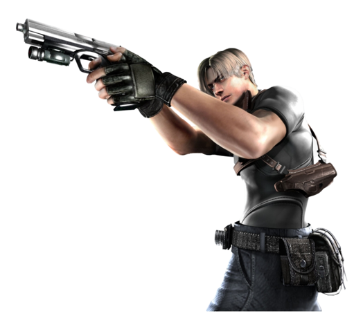
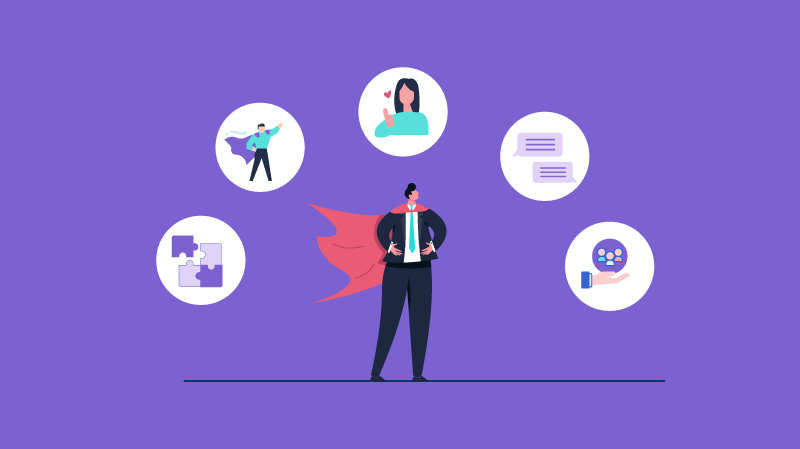

Hobbies
Sem duvidas um dos meus maiores Hobbies é jogar, desde pequeno sempre gostei de jogar, tanto em console quanto no computador, é justamente essa paixão por jogos que me motivou a buscar a programação como forma de trabalho. Alguns dos jogos que mais joguei na infancia são o Resident Evil 4, God of War, GTA San Andreas dentre outros, gostava de ficar buscando os codigos e macetes para bugar o jogo, afinal jogar serio é bom, mas jogar explorando os bugs é bem mais legal. Levei muitos anos para poder montar um computador, infelizmente meus pais não tinham condições de montar uma maquina pra mim, oque me motivou mais ainda a trabalhar como programador, justamente pelos altos salarios pagos a esses profissionais alem da liberdade de trabalhar de onde quiser, claro que tudo leva tempo e tudo tem seu preço, são horas e horas de estudos, acompanhados de uma pressão pra suprir a demanda e conclusão de projetos, mas mesmo tendo muitas vezes de pagar um preço alto, acredito que ainda vale a pena continuar estudando e se desenvolvendo na area.
Skils
Sem duvidas para falar das minhas skils é necessario falar das minhas experências profissionais, trabalho em supermercados desde os 13 anos, oque me proporcionou diversas conquistas na minha vida, como por exemplo minha moto e meu apartamento, e agora, minha faculdade. Trabalhando no mercado com o tempo me tornei mais comunicativo e desenvolvi uma facilidade muito grande de trabalhar em equipe e lidar com pessoas, cada ambiente de trabalho possui suas dificuldades e divergências, mas algo que existe em quase todos os lugares é o fato de você ter de lidar com pessoas, sejam clientes ou ate mesmo outros funcionarios. O trabalho em equipe é muito importante para o bem estar da sua rotina de trabalho, acredito que mesmo na area da programação o trabalho em equipe é muito importante, isso somado a uma comunicação clara sem duvidas gera um ganho muito grande
de performance na equipe. Dentre as minhas experiências de trabalho gosto de destacar quando trabalhei no Atacadão de Umuarama como coordenador de Inventário, esse sem duvidas é um dos setores mais importantes da operação que tinhamos ali, atráves do inventário era possivel saber se estavam tendo desvios de mercadorias, roubos, falta de lançamento de notas ou notas sendo lançadas duplicadas, isso afeta diretamente o lucro da loja. Por ser um setor de alta importancia da loja havia um pressão muito grande para que fosse feito um serviço de qualidade e minuciosamente bem feito, por esses e outro motivos me indicaram a lider desse setor. Infelizmente tiver de pedir para sair após 2 anos de trabalho pois devido ao horario da operação não seria possivel eu ingressar na faculdade.